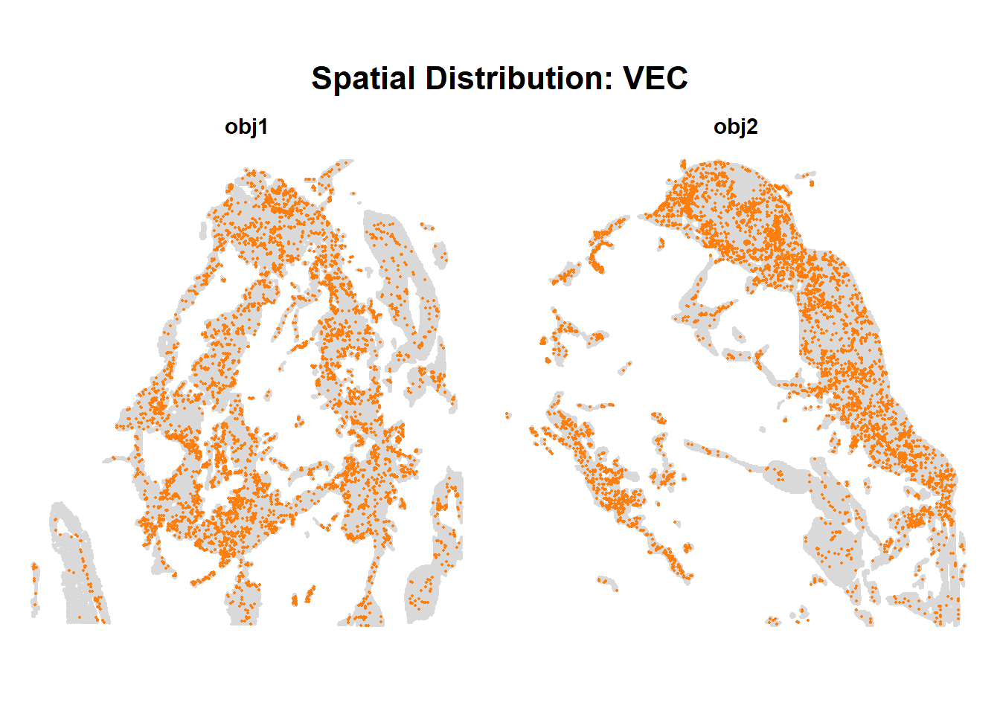
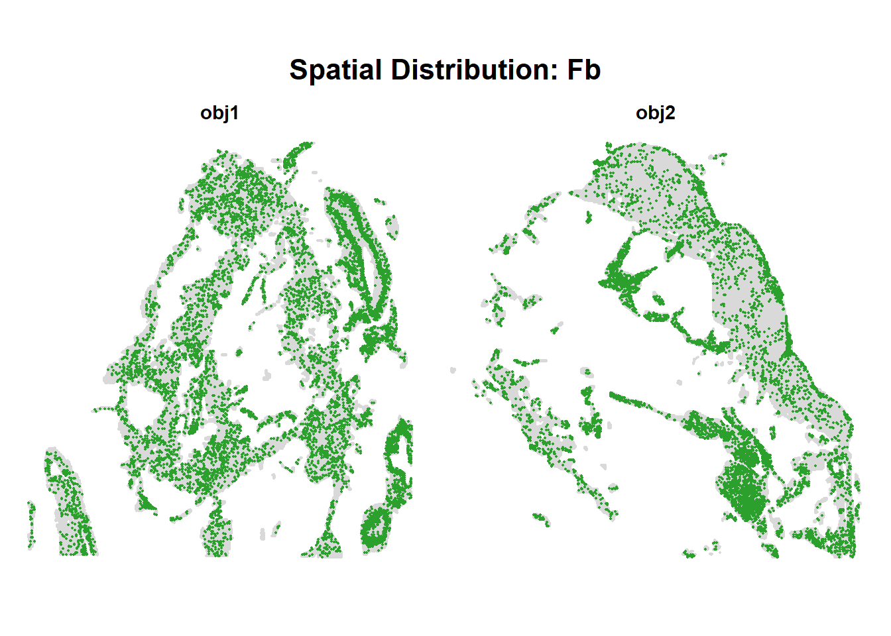
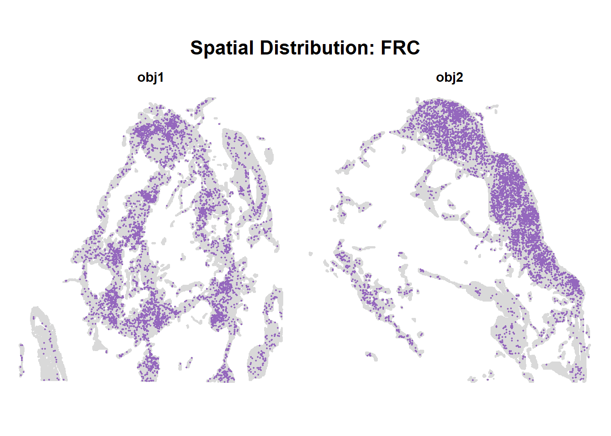
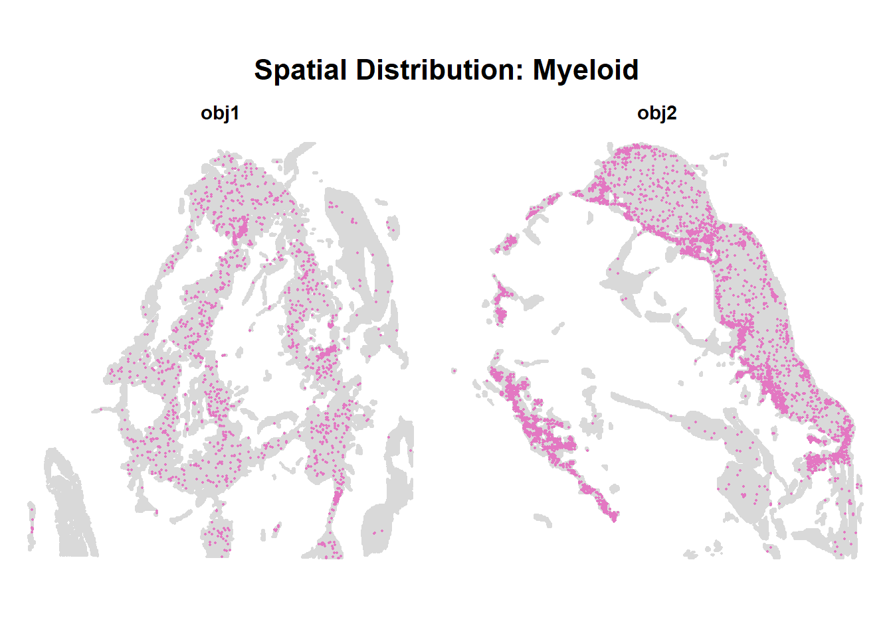
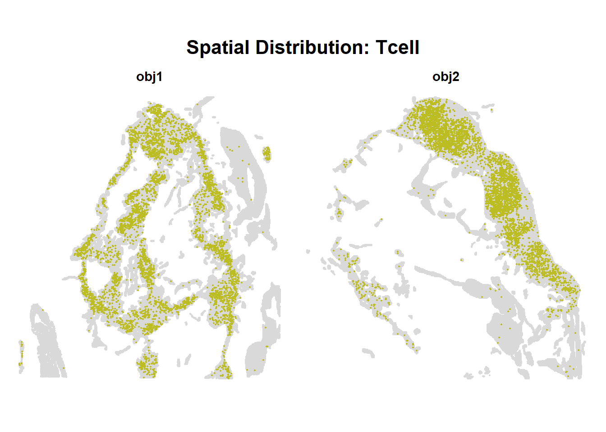
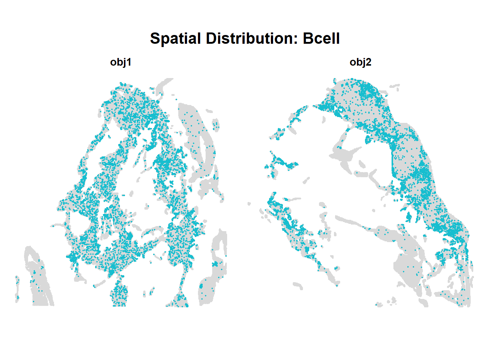

Spatial_HD_FALC
HWC
2026-09-03
Last updated: 2026-09-09
Checks: 5 2
Knit directory: Spatial_HD_2026/
This reproducible R Markdown analysis was created with workflowr (version 1.7.2). The Checks tab describes the reproducibility checks that were applied when the results were created. The Past versions tab lists the development history.
The R Markdown file has unstaged changes. To know which version of
the R Markdown file created these results, you’ll want to first commit
it to the Git repo. If you’re still working on the analysis, you can
ignore this warning. When you’re finished, you can run
wflow_publish to commit the R Markdown file and build the
HTML.
Great job! The global environment was empty. Objects defined in the global environment can affect the analysis in your R Markdown file in unknown ways. For reproduciblity it’s best to always run the code in an empty environment.
The command set.seed(20260722) was run prior to running
the code in the R Markdown file. Setting a seed ensures that any results
that rely on randomness, e.g. subsampling or permutations, are
reproducible.
Great job! Recording the operating system, R version, and package versions is critical for reproducibility.
Nice! There were no cached chunks for this analysis, so you can be confident that you successfully produced the results during this run.
Using absolute paths to the files within your workflowr project makes it difficult for you and others to run your code on a different machine. Change the absolute path(s) below to the suggested relative path(s) to make your code more reproducible.
| absolute | relative |
|---|---|
| /R/Spatial_HD_2026/data/processed_seurat/430721_1-20260821_Hu_PericardFALC_AHP2_squA_S2_16um.rds | data/processed_seurat/430721_1-20260821_Hu_PericardFALC_AHP2_squA_S2_16um.rds |
| /R/Spatial_HD_2026/data/processed_seurat/430721_2-20260821_Hu_PericardFALC_AHP3_squD_S1_16um.rds | data/processed_seurat/430721_2-20260821_Hu_PericardFALC_AHP3_squD_S1_16um.rds |
Great! You are using Git for version control. Tracking code development and connecting the code version to the results is critical for reproducibility.
The results in this page were generated with repository version 645e54a. See the Past versions tab to see a history of the changes made to the R Markdown and HTML files.
Note that you need to be careful to ensure that all relevant files for
the analysis have been committed to Git prior to generating the results
(you can use wflow_publish or
wflow_git_commit). workflowr only checks the R Markdown
file, but you know if there are other scripts or data files that it
depends on. Below is the status of the Git repository when the results
were generated:
Ignored files:
Ignored: .Rhistory
Ignored: .Rproj.user/
Ignored: data/processed_seurat/
Unstaged changes:
Modified: analysis/SpatialHD_FALC_revision_corrected.Rmd
Note that any generated files, e.g. HTML, png, CSS, etc., are not included in this status report because it is ok for generated content to have uncommitted changes.
These are the previous versions of the repository in which changes were
made to the R Markdown
(analysis/SpatialHD_FALC_revision_corrected.Rmd) and HTML
(docs/SpatialHD_FALC_revision_corrected.html) files. If
you’ve configured a remote Git repository (see
?wflow_git_remote), click on the hyperlinks in the table
below to view the files as they were in that past version.
| File | Version | Author | Date | Message |
|---|---|---|---|---|
| Rmd | 645e54a | HWC0406 | 2026-09-03 | new push |
| html | 645e54a | HWC0406 | 2026-09-03 | new push |
Data input
obj1 <- readRDS("/R/Spatial_HD_2026/data/processed_seurat/430721_1-20260821_Hu_PericardFALC_AHP2_squA_S2_16um.rds")
obj2 <- readRDS("/R/Spatial_HD_2026/data/processed_seurat/430721_2-20260821_Hu_PericardFALC_AHP3_squD_S1_16um.rds")
samples <- c("obj1", "obj2")
seu_list <- list(obj1 = obj1, obj2 = obj2)
# quick look at what came in
for (nm in samples) {
message(nm, ": ", ncol(seu_list[[nm]]), " bins, ",
nrow(seu_list[[nm]]), " features; images: ",
paste(Images(seu_list[[nm]]), collapse = ", "))
}SCT normalization
sce_list <- list() # holds the 2 separate results
for (nm in samples) {
message("Processing native Seurat object: ", nm)
seu_obj <- seu_list[[nm]]
active_assay <- DefaultAssay(seu_obj)
message(" Found active assay: '", active_assay, "'")
seu_obj <- seu_obj[, colSums(GetAssayData(seu_obj, assay = active_assay, slot = "counts")) > 0]
seu_obj <- SCTransform(seu_obj, assay = active_assay, verbose = FALSE)
sce_final <- as.SingleCellExperiment(seu_obj)
sct_residual_matrix <- matrix(
0,
nrow = nrow(sce_final),
ncol = ncol(sce_final),
dimnames = list(rownames(sce_final), colnames(sce_final))
)
computed_residuals <- seu_obj[["SCT"]]$scale.data
matching_genes <- intersect(rownames(sct_residual_matrix), rownames(computed_residuals))
sct_residual_matrix[matching_genes, ] <- computed_residuals[matching_genes, ]
assays(sce_final)[["SCT_residuals"]] <- sct_residual_matrix
hvg_genes <- VariableFeatures(seu_obj)
rowData(sce_final)$hvg <- rownames(sce_final) %in% hvg_genes
metadata(sce_final)$sct_hvgs <- VariableFeatures(seu_obj)
sce_list[[nm]] <- sce_final # keep them separate, indexed by name
message(" Stored normalized container for: ", nm,
" (", ncol(sce_final), " bins retained)")
}Spatial coordinate helpers
# ---------------------------------------------------------------------------
# get_coords(): the ONLY source of spatial coordinates in this document.
# Reads GetTissueCoordinates() from the image object, matches barcodes to the
# SCE (which has fewer columns after the zero-count filter above), rescales
# full-resolution pixel coordinates into the lowres raster frame, and negates
# y so that plots come out upright without scale_y_reverse().
# ---------------------------------------------------------------------------
get_coords <- function(seu, sce, image_name = NULL) {
if (is.null(image_name)) image_name <- Images(seu)[1]
img <- seu[[image_name]]
co <- GetTissueCoordinates(img)
# barcodes live either in a 'cell' column or in the rownames
bc <- if ("cell" %in% colnames(co)) as.character(co$cell) else rownames(co)
# column naming differs between VisiumV1 (imagerow/imagecol) and VisiumV2 (x/y)
xcol <- if ("imagecol" %in% colnames(co)) "imagecol" else "x"
ycol <- if ("imagerow" %in% colnames(co)) "imagerow" else "y"
idx <- match(colnames(sce), bc)
if (anyNA(idx)) {
stop(sum(is.na(idx)), " SCE barcodes have no entry in the tissue coordinates. ",
"Did the SCE and the Seurat object come from the same sample?")
}
px <- as.numeric(co[[xcol]])[idx]
py <- as.numeric(co[[ycol]])[idx]
# coordinates are usually full-res while GetImage() returns the lowres raster
he <- GetImage(img, mode = "raster")
f <- 1
if (max(px, na.rm = TRUE) > ncol(he) * 1.05 ||
max(py, na.rm = TRUE) > nrow(he) * 1.05) {
f <- ScaleFactors(img)$lowres
message(" rescaling coordinates by lowres factor ", signif(f, 4))
}
data.frame(x = px * f, y = -py * f) # minus: see coordinate note at top
}
# ---------------------------------------------------------------------------
# crop_he(): trim the H&E to the tissue-detected region and return the raster
# together with its bounds in the SAME coordinate frame get_coords() uses,
# so an H&E panel and a score panel line up without any flip or transpose.
# ---------------------------------------------------------------------------
crop_he <- function(seu, image_name = NULL, pad_frac = 0.02) {
if (is.null(image_name)) image_name <- Images(seu)[1]
img <- seu[[image_name]]
he <- GetImage(img, mode = "raster")
ih <- nrow(he); iw <- ncol(he)
co <- GetTissueCoordinates(img)
xcol <- if ("imagecol" %in% colnames(co)) "imagecol" else "x"
ycol <- if ("imagerow" %in% colnames(co)) "imagerow" else "y"
cx <- as.numeric(co[[xcol]])
cy <- as.numeric(co[[ycol]])
if (max(cx, na.rm = TRUE) > iw * 1.05 || max(cy, na.rm = TRUE) > ih * 1.05) {
f <- ScaleFactors(img)$lowres
cx <- cx * f; cy <- cy * f
}
padx <- pad_frac * diff(range(cx, na.rm = TRUE))
pady <- pad_frac * diff(range(cy, na.rm = TRUE))
c1 <- max(1, floor(min(cx, na.rm = TRUE) - padx))
c2 <- min(iw, ceiling(max(cx, na.rm = TRUE) + padx))
r1 <- max(1, floor(min(cy, na.rm = TRUE) - pady))
r2 <- min(ih, ceiling(max(cy, na.rm = TRUE) + pady))
message(" full image ", iw, "x", ih,
" -> crop ", c2 - c1 + 1, "x", r2 - r1 + 1)
list(
raster = he[r1:r2, c1:c2, drop = FALSE],
xmin = c1, xmax = c2, # plot-space bounds, matching get_coords():
ymin = -r2, ymax = -r1 # y negated, so ymin is the more negative one
)
}
# ---------------------------------------------------------------------------
# he_panel(): an H&E panel in plot coordinates. No transpose, no flip -
# orientation is inherited from the coordinate frame, so this is correct for
# every sample regardless of how the section was laid on the slide.
# ---------------------------------------------------------------------------
he_panel <- function(seu, label) {
cr <- crop_he(seu)
ggplot() +
annotation_raster(cr$raster,
xmin = cr$xmin, xmax = cr$xmax,
ymin = cr$ymin, ymax = cr$ymax) +
xlim(cr$xmin, cr$xmax) +
ylim(cr$ymin, cr$ymax) +
coord_fixed() +
theme_void() +
labs(subtitle = paste0(label, " - H&E")) +
theme(plot.subtitle = element_text(hjust = 0.5, face = "bold", size = 10))
}
# --- build coordinates and H&E panels once, reused by every chunk below -----
coord_list <- list()
he_panels <- list()
for (nm in samples) {
message("Coordinates: ", nm)
xy <- get_coords(seu_list[[nm]], sce_list[[nm]])
coord_list[[nm]] <- data.frame(sample = nm, x = xy$x, y = xy$y)
message("H&E: ", nm)
he_panels[[nm]] <- he_panel(seu_list[[nm]], nm)
}
# sanity check: bin spacing in lowres pixels, useful for tuning point size
for (nm in samples) {
d <- coord_list[[nm]]
message(nm, ": x span ", signif(diff(range(d$x)), 4),
" px, y span ", signif(diff(range(d$y)), 4),
" px, n = ", nrow(d))
}
wrap_plots(he_panels, nrow = 1)
| Version | Author | Date |
|---|---|---|
| 645e54a | HWC0406 | 2026-09-03 |
Plotting of top HVGs
n_top <- 50
n_row <- 5
n_col <- 5
per_page <- n_row * n_col
hvg_plots <- list() # paginated grids, per sample
hvg_panels <- list() # individual gene panels
for (nm in samples) {
sce_obj <- sce_list[[nm]]
message("Processing: ", nm)
# logcounts here is SCT's 'data' slot (log1p of corrected counts).
# Do NOT logNormCounts() - that would re-normalize corrected values.
if (!"logcounts" %in% assayNames(sce_obj)) {
stop("No logcounts in ", nm, " - was DefaultAssay 'SCT' at conversion?")
}
if (!"SCT_residuals" %in% assayNames(sce_obj)) {
stop("No SCT_residuals in ", nm, " - cannot rank HVGs by residual variance.")
}
# --- HVGs from SCT, ranked by residual variance ---
hvg_all <- rownames(sce_obj)[rowData(sce_obj)$hvg]
if (length(hvg_all) == 0) {
stop("No HVGs flagged in rowData(", nm, ")$hvg.")
}
res_mat <- assay(sce_obj, "SCT_residuals")[hvg_all, , drop = FALSE]
res_var <- if (requireNamespace("matrixStats", quietly = TRUE)) {
setNames(matrixStats::rowVars(as.matrix(res_mat)), hvg_all)
} else {
apply(res_mat, 1, var)
}
top_HVG <- names(sort(res_var, decreasing = TRUE))[seq_len(min(n_top, length(hvg_all)))]
message(" ", length(top_HVG), " HVGs; top 3: ",
paste(head(top_HVG, 3), collapse = ", "), " ...")
xy <- coord_list[[nm]]
expr_mat <- logcounts(sce_obj)
plot_list <- lapply(top_HVG, function(gene) {
df <- data.frame(x = xy$x, y = xy$y,
expression = as.numeric(expr_mat[gene, ]))
df <- df[order(df$expression), ]
ggplot(df, aes(x = x, y = y, color = expression)) +
geom_point(size = 0.005, alpha = 0.5) +
scale_color_viridis_c(option = "plasma") +
coord_fixed() +
theme_void() +
labs(title = gene, color = "LogExpr") +
theme(plot.title = element_text(hjust = 0.5, face = "bold", size = 8),
legend.position = "none")
})
names(plot_list) <- top_HVG
hvg_panels[[nm]] <- plot_list
# --- split into pages of per_page panels ---
pages <- split(seq_along(plot_list), ceiling(seq_along(plot_list) / per_page))
hvg_plots[[nm]] <- lapply(seq_along(pages), function(p) {
idx <- pages[[p]]
g <- wrap_plots(plot_list[idx], nrow = n_row, ncol = n_col) +
plot_annotation(
title = paste0(nm, " - top HVGs (", min(idx), "-", max(idx), ")"),
theme = theme(plot.title = element_text(face = "bold", hjust = 0.5))
)
print(g)
g
})
message("Done: ", nm, " (", length(pages), " pages)")
}
| Version | Author | Date |
|---|---|---|
| 645e54a | HWC0406 | 2026-09-03 |

| Version | Author | Date |
|---|---|---|
| 645e54a | HWC0406 | 2026-09-03 |

| Version | Author | Date |
|---|---|---|
| 645e54a | HWC0406 | 2026-09-03 |

| Version | Author | Date |
|---|---|---|
| 645e54a | HWC0406 | 2026-09-03 |
Plotting of selected genes, both samples
genes_of_interest <- c("CCL19","CXCL13","CCL11","IL33","IL6","BMP4","TCF21","COL11A1",
"VCAM1","FAT4","ALDH1A2","JCHAIN","CD4","CD3E","CD14",
"MCAM","CLU","IL7R","IL23R","PTPRC","CD19","IGHD","EOMES",
"MSLN","CD68","DPP4","ITGAX")
# NB: LY6G removed - no human ortholog. Use FCGR3B or CEACAM8 for neutrophils.
# --- prep each sample once, outside the gene loop ---
prep <- lapply(samples, function(nm) {
sce_obj <- sce_list[[nm]]
if (!"logcounts" %in% assayNames(sce_obj)) {
stop("No logcounts in ", nm, " - was DefaultAssay 'SCT' at conversion?")
}
list(name = nm,
expr = logcounts(sce_obj),
x = coord_list[[nm]]$x,
y = coord_list[[nm]]$y)
})
names(prep) <- samples
# genes present in the SCE but absent from the raw assay are real absences;
# genes absent here but present in RNA were dropped by SCTransform's min_cells
for (nm in samples) {
gone <- setdiff(genes_of_interest, rownames(sce_list[[nm]]))
if (length(gone))
message(nm, " missing from SCT: ", paste(gone, collapse = ", "))
}
gene_plots <- list()
for (i in seq_along(genes_of_interest)) {
gene <- genes_of_interest[i]
# --- detectability per sample ---
status <- lapply(prep, function(s) {
in_object <- gene %in% rownames(s$expr)
e <- if (in_object) as.numeric(s$expr[gene, ]) else NULL
list(in_object = in_object,
expr = e,
detectable = in_object && any(e > 0))
})
det <- vapply(status, `[[`, logical(1), "detectable")
message("Plotting ", i, "/", length(genes_of_interest), ": ", gene,
" [", paste(samples, ifelse(det, "ok", "not detectable"),
sep = ": ", collapse = "; "), "]")
# --- shared colour limits across whichever samples have signal ---
lims <- if (any(det)) {
range(unlist(lapply(status[det], `[[`, "expr")), na.rm = TRUE)
} else NULL
panels <- lapply(samples, function(nm) {
s <- prep[[nm]]
st <- status[[nm]]
if (st$detectable) {
df <- data.frame(x = s$x, y = s$y, expression = st$expr)
df <- df[order(df$expression), ] # positive spots drawn on top
ggplot(df, aes(x = x, y = y, color = expression)) +
geom_point(size = 0.3, alpha = 0.6) +
scale_color_viridis_c(option = "plasma", limits = lims) +
coord_fixed() + theme_void() +
labs(subtitle = nm, color = "LogExpr") +
theme(plot.subtitle = element_text(hjust = 0.5, face = "bold", size = 10))
} else {
df <- data.frame(x = s$x, y = s$y)
reason <- if (!st$in_object) "not in dataset" else "all zero"
ggplot(df, aes(x = x, y = y)) +
geom_point(size = 0.3, alpha = 0.4, color = "grey80") +
coord_fixed() + theme_void() +
labs(subtitle = paste0(nm, " - not detectable")) +
annotate("text",
x = mean(range(s$x, na.rm = TRUE)),
y = mean(range(s$y, na.rm = TRUE)),
label = paste0("Not detectable\n(", reason, ")"),
fontface = "italic", size = 4, color = "grey30") +
theme(plot.subtitle = element_text(hjust = 0.5, face = "bold", size = 10))
}
})
names(panels) <- samples
# scores on the top row, matching H&E below
p <- wrap_plots(c(panels, he_panels), ncol = length(samples)) +
plot_layout(guides = "collect") +
plot_annotation(
title = gene,
theme = theme(plot.title = element_text(hjust = 0.5, face = "bold", size = 14))
)
gene_plots[[gene]] <- p
print(p)
}
| Version | Author | Date |
|---|---|---|
| 645e54a | HWC0406 | 2026-09-03 |

| Version | Author | Date |
|---|---|---|
| 645e54a | HWC0406 | 2026-09-03 |

| Version | Author | Date |
|---|---|---|
| 645e54a | HWC0406 | 2026-09-03 |

| Version | Author | Date |
|---|---|---|
| 645e54a | HWC0406 | 2026-09-03 |

| Version | Author | Date |
|---|---|---|
| 645e54a | HWC0406 | 2026-09-03 |

| Version | Author | Date |
|---|---|---|
| 645e54a | HWC0406 | 2026-09-03 |

| Version | Author | Date |
|---|---|---|
| 645e54a | HWC0406 | 2026-09-03 |

| Version | Author | Date |
|---|---|---|
| 645e54a | HWC0406 | 2026-09-03 |

| Version | Author | Date |
|---|---|---|
| 645e54a | HWC0406 | 2026-09-03 |

| Version | Author | Date |
|---|---|---|
| 645e54a | HWC0406 | 2026-09-03 |

| Version | Author | Date |
|---|---|---|
| 645e54a | HWC0406 | 2026-09-03 |

| Version | Author | Date |
|---|---|---|
| 645e54a | HWC0406 | 2026-09-03 |

| Version | Author | Date |
|---|---|---|
| 645e54a | HWC0406 | 2026-09-03 |

| Version | Author | Date |
|---|---|---|
| 645e54a | HWC0406 | 2026-09-03 |

| Version | Author | Date |
|---|---|---|
| 645e54a | HWC0406 | 2026-09-03 |

| Version | Author | Date |
|---|---|---|
| 645e54a | HWC0406 | 2026-09-03 |

| Version | Author | Date |
|---|---|---|
| 645e54a | HWC0406 | 2026-09-03 |

| Version | Author | Date |
|---|---|---|
| 645e54a | HWC0406 | 2026-09-03 |

| Version | Author | Date |
|---|---|---|
| 645e54a | HWC0406 | 2026-09-03 |

| Version | Author | Date |
|---|---|---|
| 645e54a | HWC0406 | 2026-09-03 |

| Version | Author | Date |
|---|---|---|
| 645e54a | HWC0406 | 2026-09-03 |

| Version | Author | Date |
|---|---|---|
| 645e54a | HWC0406 | 2026-09-03 |

| Version | Author | Date |
|---|---|---|
| 645e54a | HWC0406 | 2026-09-03 |

| Version | Author | Date |
|---|---|---|
| 645e54a | HWC0406 | 2026-09-03 |

| Version | Author | Date |
|---|---|---|
| 645e54a | HWC0406 | 2026-09-03 |

| Version | Author | Date |
|---|---|---|
| 645e54a | HWC0406 | 2026-09-03 |

| Version | Author | Date |
|---|---|---|
| 645e54a | HWC0406 | 2026-09-03 |
Set up cell type signatures
my_signatures <- list(
VEC = c("PECAM1","CDH5","VWF","ICAM2","PLVAP","AQP1","ENG"),
Fb = c("COL3A1","COL1A2","PDGFRA","PDGFRB","DCN","LUM","COL1A1",
"ACTA2","TAGLN","MYH11","RGS5","NOTCH3"),
FRC = c("CCL19","CXCL13","CLU","VCAM1","ICAM1"),
Myeloid = c("MRC1","SIRPA","PTPRC","CSF1R","HLA-DRA","HLA-DRB1","S100A9","LYZ",
"FCN1","ITGAX","CD14","MARCO","SIGLEC1","CCR2","CLEC4C","TLR7"),
Tcell = c("CD3D","CD3E","CD3G","CD28","IL7R","IL2RB","CD4","CCR7","CTLA4"),
Bcell = c("MS4A1","CD79A","CD79B","CD72","CD38","IGHD","IGHM","CD24",
"JCHAIN","IGKC","IGHG1","IGHG3","IGHA1")
)
# genes must be present in EVERY object so scores use the same gene set
common_genes <- Reduce(intersect, lapply(sce_list[samples], rownames))
sig_present <- lapply(my_signatures, intersect, common_genes)
for (s in names(my_signatures)) {
missing <- setdiff(my_signatures[[s]], sig_present[[s]])
message(s, ": ", length(sig_present[[s]]), "/", length(my_signatures[[s]]), " present",
if (length(missing)) paste0(" MISSING: ", paste(missing, collapse = ", ")) else "")
}
sig_use <- sig_present[lengths(sig_present) >= 3]
message("Using ", length(sig_use), " signatures: ", paste(names(sig_use), collapse = ", "))
cell_colors <- c(
VEC = "#ff7f0e",
Fb = "#2ca02c",
FRC = "#9467bd",
Myeloid = "#e377c2",
Tcell = "#bcbd22",
Bcell = "#17becf",
Unassigned = "grey90"
)Cell type projection
score_signature <- function(sce, genes) {
mat <- SummarizedExperiment::assay(sce, "logcounts")[genes, , drop = FALSE]
mat <- as.matrix(base::as.matrix(mat)) # force a real base matrix
storage.mode(mat) <- "double"
mu <- base::rowMeans(mat)
sdv <- sqrt(base::rowSums((mat - mu)^2) / (ncol(mat) - 1))
sdv[sdv == 0 | is.na(sdv)] <- 1 # zero-variance genes -> score 0
z <- (mat - mu) / sdv
base::colMeans(z)
}
score_list <- list()
for (nm in samples) {
sce_obj <- sce_list[[nm]]
message("Scoring: ", nm)
m <- sapply(sig_use, function(g) score_signature(sce_obj, g))
stopifnot(is.matrix(m), nrow(m) == ncol(sce_obj),
nrow(m) == nrow(coord_list[[nm]]))
score_list[[nm]] <- m
message(" ", nrow(m), " bins x ", ncol(m), " signatures")
}
# keep signatures with non-zero variance in ALL samples
keep <- Reduce(intersect, lapply(score_list, function(m) colnames(m)[apply(m, 2, sd) > 0]))
score_list <- lapply(score_list, function(m) m[, keep, drop = FALSE])
message("Retained: ", paste(keep, collapse = ", "))Signature score maps
sig_plots <- list()
for (i in seq_along(keep)) {
s <- keep[i]
message("Plotting ", i, "/", length(keep), ": ", s)
# shared limits across both samples so the panels are comparable
lims <- quantile(unlist(lapply(score_list, function(m) m[, s])),
c(0.01, 0.99), na.rm = TRUE)
panels <- lapply(samples, function(nm) {
d <- data.frame(x = coord_list[[nm]]$x,
y = coord_list[[nm]]$y,
score = score_list[[nm]][, s])
d <- d[order(d$score), ]
ggplot(d, aes(x = x, y = y, color = score)) +
geom_point(size = 0.4, alpha = 0.7) +
scale_color_viridis_c(option = "magma", limits = lims, oob = scales::squish) +
coord_fixed() + theme_void() +
labs(subtitle = nm, color = "Score") +
theme(plot.subtitle = element_text(hjust = 0.5, face = "bold", size = 10))
})
names(panels) <- samples
p <- wrap_plots(c(panels, he_panels), ncol = length(samples)) +
plot_layout(guides = "collect") +
plot_annotation(
title = s,
theme = theme(plot.title = element_text(hjust = 0.5, face = "bold", size = 14))
)
sig_plots[[s]] <- p
print(p)
}
| Version | Author | Date |
|---|---|---|
| 645e54a | HWC0406 | 2026-09-03 |

| Version | Author | Date |
|---|---|---|
| 645e54a | HWC0406 | 2026-09-03 |

| Version | Author | Date |
|---|---|---|
| 645e54a | HWC0406 | 2026-09-03 |

| Version | Author | Date |
|---|---|---|
| 645e54a | HWC0406 | 2026-09-03 |

| Version | Author | Date |
|---|---|---|
| 645e54a | HWC0406 | 2026-09-03 |

| Version | Author | Date |
|---|---|---|
| 645e54a | HWC0406 | 2026-09-03 |
Signature score maps, per-type colour
cts <- intersect(keep, names(cell_colors))
missing_col <- setdiff(keep, names(cell_colors))
if (length(missing_col))
message("No colour defined, skipping: ", paste(missing_col, collapse = ", "))
stopifnot(length(cts) > 0)
score_plots <- list()
for (i in seq_along(cts)) {
ct <- cts[i]
message("Plotting ", i, "/", length(cts), ": ", ct)
lims <- quantile(unlist(lapply(score_list, function(m) m[, ct])),
c(0.01, 0.99), na.rm = TRUE)
panels <- lapply(samples, function(nm) {
d <- data.frame(x = coord_list[[nm]]$x,
y = coord_list[[nm]]$y,
score = score_list[[nm]][, ct])
d <- d[order(d$score), ]
ggplot(d, aes(x = x, y = y, color = score)) +
geom_point(size = 0.4, alpha = 0.8) +
scale_color_gradient(low = "grey92", high = cell_colors[[ct]],
limits = lims, oob = scales::squish) +
coord_fixed() + theme_void() +
labs(subtitle = nm, color = "Score") +
theme(plot.subtitle = element_text(hjust = 0.5, face = "bold", size = 10))
})
names(panels) <- samples
p <- wrap_plots(c(panels, he_panels), ncol = length(samples)) +
plot_layout(guides = "collect") +
plot_annotation(
title = ct,
theme = theme(plot.title = element_text(hjust = 0.5, face = "bold", size = 13))
)
score_plots[[ct]] <- p
print(p)
}
| Version | Author | Date |
|---|---|---|
| 645e54a | HWC0406 | 2026-09-03 |

| Version | Author | Date |
|---|---|---|
| 645e54a | HWC0406 | 2026-09-03 |

| Version | Author | Date |
|---|---|---|
| 645e54a | HWC0406 | 2026-09-03 |

| Version | Author | Date |
|---|---|---|
| 645e54a | HWC0406 | 2026-09-03 |

| Version | Author | Date |
|---|---|---|
| 645e54a | HWC0406 | 2026-09-03 |

| Version | Author | Date |
|---|---|---|
| 645e54a | HWC0406 | 2026-09-03 |
Cell type distribution
thr <- 0 # tune this; see note on `margin` below
assign_df <- do.call(rbind, lapply(samples, function(nm) {
m <- score_list[[nm]]
winner_idx <- max.col(m, ties.method = "first")
winner <- colnames(m)[winner_idx]
winner_score <- m[cbind(seq_len(nrow(m)), winner_idx)]
# runner-up, to measure how decisive the call is
runner_up <- apply(replace(m, cbind(seq_len(nrow(m)), winner_idx), -Inf), 1, max)
margin <- winner_score - runner_up
winner[winner_score < thr] <- "Unassigned"
cbind(coord_list[[nm]], label = winner, strength = winner_score, margin = margin)
}))
assign_df$sample <- factor(assign_df$sample, levels = samples)
assign_df$label <- factor(assign_df$label, levels = c(keep, "Unassigned"))
print(table(assign_df$sample, assign_df$label))
VEC Fb FRC Myeloid Tcell Bcell Unassigned
obj1 4078 8094 3870 1399 4072 5433 21518
obj2 3867 5664 4123 3056 3785 4424 5896# grey drawn first so assigned bins sit on top
plot_df <- assign_df[order(assign_df$label == "Unassigned", decreasing = TRUE), ]
tile_panels <- lapply(samples, function(nm) {
d <- plot_df[plot_df$sample == nm, ]
ggplot(d, aes(x = x, y = y, color = label)) +
geom_point(size = 0.35) +
scale_color_manual(values = cell_colors, drop = FALSE) +
coord_fixed() + theme_void() +
labs(subtitle = nm, color = NULL) +
theme(plot.subtitle = element_text(hjust = 0.5, face = "bold"))
})
names(tile_panels) <- samples
celltype_map <- wrap_plots(c(tile_panels, he_panels), ncol = length(samples)) +
plot_layout(guides = "collect") +
plot_annotation(
title = "Dominant signature per bin (16 \u00b5m)",
theme = theme(plot.title = element_text(hjust = 0.5, face = "bold"))
) &
guides(color = guide_legend(override.aes = list(size = 3)))
print(celltype_map)
| Version | Author | Date |
|---|---|---|
| 645e54a | HWC0406 | 2026-09-03 |
celltype_map_clean <- wrap_plots(tile_panels, nrow = 1) +
plot_layout(guides = "collect") +
plot_annotation(
title = "Dominant signature per bin (16 µm)",
theme = theme(plot.title = element_text(hjust = 0.5, face = "bold"))
) &
guides(fill = guide_legend(override.aes = list(size = 3)))
print(celltype_map_clean)
| Version | Author | Date |
|---|---|---|
| 645e54a | HWC0406 | 2026-09-03 |
# composition per sample
ggplot(assign_df, aes(x = sample, fill = label)) +
geom_bar(position = "fill") +
scale_fill_manual(values = cell_colors, drop = FALSE) +
labs(y = "Fraction of bins", x = NULL, fill = NULL) +
theme_minimal()
| Version | Author | Date |
|---|---|---|
| 645e54a | HWC0406 | 2026-09-03 |
# how decisive were the calls? bins with a small margin are ambiguous
# regardless of how high the winning score was - often a better filter than thr
ggplot(assign_df, aes(x = margin, fill = sample)) +
geom_density(alpha = 0.4) +
labs(x = "Winner minus runner-up", y = "Density", fill = NULL) +
theme_minimal()
| Version | Author | Date |
|---|---|---|
| 645e54a | HWC0406 | 2026-09-03 |
# Extract all valid cell types to loop through (ignoring "Unassigned")
cell_types <- levels(assign_df$label)
cell_types <- cell_types[cell_types != "Unassigned"]
# Loop through each cell type
for (ctype in cell_types) {
# 1. Create a custom color palette for this specific cell type
# Make everything grey by default, then assign the specific color to the target
highlight_colors <- rep("grey85", length(cell_colors))
names(highlight_colors) <- names(cell_colors)
# Keep the original color for the target cell type
if (ctype %in% names(cell_colors)) {
highlight_colors[ctype] <- cell_colors[ctype]
}
# 2. Reorder data so the target cell type is drawn last (on top)
# This prevents the grey background points from covering up the target points
plot_df_loop <- assign_df
plot_df_loop$is_target <- plot_df_loop$label == ctype
plot_df_loop <- plot_df_loop[order(plot_df_loop$is_target), ]
# 3. Generate the individual panels for this cell type
tile_panels_loop <- lapply(samples, function(nm) {
d <- plot_df_loop[plot_df_loop$sample == nm, ]
ggplot(d, aes(x = x, y = y, color = label)) +
geom_point(size = 0.35) +
scale_color_manual(values = highlight_colors, drop = FALSE) +
coord_fixed() +
theme_void() +
labs(subtitle = nm) +
theme(
plot.subtitle = element_text(hjust = 0.5, face = "bold"),
legend.position = "none" # Hide legend since the title explains the plot
)
})
# 4. Assemble the panels using patchwork
celltype_map_single <- wrap_plots(tile_panels_loop, nrow = 1) +
plot_annotation(
title = sprintf("Spatial Distribution: %s", ctype),
theme = theme(plot.title = element_text(hjust = 0.5, face = "bold", size = 16))
)
# 5. Print the plot to the graphics device
print(celltype_map_single)
}
| Version | Author | Date |
|---|---|---|
| 645e54a | HWC0406 | 2026-09-03 |

| Version | Author | Date |
|---|---|---|
| 645e54a | HWC0406 | 2026-09-03 |

| Version | Author | Date |
|---|---|---|
| 645e54a | HWC0406 | 2026-09-03 |

| Version | Author | Date |
|---|---|---|
| 645e54a | HWC0406 | 2026-09-03 |

| Version | Author | Date |
|---|---|---|
| 645e54a | HWC0406 | 2026-09-03 |

| Version | Author | Date |
|---|---|---|
| 645e54a | HWC0406 | 2026-09-03 |
Saving figures
# 79k points per panel is slow in the RStudio pane; write to file instead
dir.create("figures", showWarnings = FALSE)
pdf("figures/gene_maps.pdf", width = 10, height = 10)
for (p in gene_plots) print(p)
dev.off()
pdf("figures/signature_maps.pdf", width = 10, height = 10)
for (p in sig_plots) print(p)
dev.off()
pdf("figures/signature_maps_coloured.pdf", width = 10, height = 10)
for (p in score_plots) print(p)
dev.off()
ggsave("figures/celltype_map.pdf", celltype_map, width = 12, height = 10)session info
date()[1] "Wed Sep 9 10:30:46 2026"sessionInfo()R version 4.4.1 (2024-06-14 ucrt)
Platform: x86_64-w64-mingw32/x64
Running under: Windows 11 x64 (build 22631)
Matrix products: default
locale:
[1] LC_COLLATE=English_United States.utf8 LC_CTYPE=English_United States.utf8
[3] LC_MONETARY=English_United States.utf8 LC_NUMERIC=C
[5] LC_TIME=English_United States.utf8
time zone: Europe/Berlin
tzcode source: internal
attached base packages:
[1] grid stats4 stats graphics grDevices utils datasets methods base
other attached packages:
[1] nnSVG_1.8.0 igraph_2.2.1 BayesSpace_1.14.0
[4] Banksy_1.0.0 scran_1.32.0 Voyager_1.6.0
[7] ggspavis_1.10.0 SpatialFeatureExperiment_1.6.1 HDF5Array_1.32.1
[10] rhdf5_2.48.0 DelayedArray_0.30.1 SparseArray_1.4.8
[13] S4Arrays_1.4.1 abind_1.4-8 Matrix_1.7-4
[16] SpatialExperiment_1.14.0 patchwork_1.3.2 org.Mm.eg.db_3.19.1
[19] harmony_2.0.5 Rcpp_1.1.0 BiocParallel_1.38.0
[22] scDblFinder_1.18.0 writexl_2.0.0 scRepertoire_2.0.7
[25] kableExtra_1.4.1 knitr_1.51 magrittr_2.0.4
[28] RColorBrewer_1.1-3 NCmisc_1.3.1 VennDiagram_1.8.2
[31] futile.logger_1.4.9 ggupset_0.4.1 gridExtra_2.3
[34] DOSE_3.30.5 enrichplot_1.24.4 msigdbr_26.1.0
[37] org.Hs.eg.db_3.19.1 AnnotationDbi_1.66.0 clusterProfiler_4.12.6
[40] multtest_2.60.0 metap_1.12 scater_1.32.1
[43] scuttle_1.14.0 destiny_3.18.0 circlize_0.4.18
[46] muscat_1.18.0 viridis_0.6.5 viridisLite_0.4.2
[49] lubridate_1.9.4 forcats_1.0.1 stringr_1.5.2
[52] purrr_1.1.0 readr_2.1.5 tidyr_1.3.1
[55] tibble_3.3.0 tidyverse_2.0.0 dplyr_1.1.4
[58] SingleCellExperiment_1.26.0 SummarizedExperiment_1.34.0 Biobase_2.64.0
[61] GenomicRanges_1.56.2 GenomeInfoDb_1.40.1 IRanges_2.38.1
[64] S4Vectors_0.42.1 BiocGenerics_0.50.0 MatrixGenerics_1.16.0
[67] matrixStats_1.5.0 pheatmap_1.0.13 ggpubr_0.6.2
[70] ggplot2_4.0.0 Seurat_5.3.0 SeuratObject_5.2.0
[73] sp_2.2-0 runSeurat3_0.1.0 ExploreSCdataSeurat3_0.1.0
loaded via a namespace (and not attached):
[1] xts_0.14.1 DBI_1.3.0 bslib_0.12.0
[4] httr_1.4.8 prettyunits_1.2.0 yulab.utils_0.2.4
[7] gsl_2.1-8 VIM_6.2.6 ggplotify_0.1.3
[10] GenomicAlignments_1.40.0 fANCOVA_0.6-1 sparseMatrixStats_1.16.0
[13] remaCor_0.0.20 spatstat.geom_3.6-0 babelgene_22.9
[16] TTR_0.24.4 pillar_1.11.1 R6_2.6.1
[19] boot_1.3-32 mime_0.13 glmGamPoi_1.16.0
[22] reticulate_1.45.0 edgeR_4.2.2 uwot_0.2.3
[25] Rhdf5lib_1.26.0 ROCR_1.0-12 rprojroot_2.1.1
[28] RcppHungarian_0.3 limma_3.60.6 S7_0.2.0
[31] parallelly_1.45.1 iNEXT_3.0.2 GlobalOptions_0.1.4
[34] rbibutils_2.4.1 caTools_1.18.3 mgcv_1.9-4
[37] polyclip_1.10-7 beachmat_2.20.0 htmltools_0.5.8.1
[40] lambda.r_1.2.4 e1071_1.7-16 ggplot.multistats_1.0.1
[43] ggrepel_0.9.6 classInt_0.4-11 car_3.1-5
[46] spData_2.3.5 ComplexHeatmap_2.20.0 fgsea_1.30.0
[49] aricode_1.1.0 spatstat.utils_3.2-0 TFisher_0.2.0
[52] scatterplot3d_0.3-45 clue_0.3-66 scatterpie_0.2.6
[55] fitdistrplus_1.2-6 goftest_1.2-3 tidyselect_1.2.1
[58] sfheaders_0.4.5 RSQLite_2.4.3 truncdist_1.0-2
[61] cowplot_1.2.0 GenomeInfoDbData_1.2.12 ScaledMatrix_1.12.0
[64] scattermore_1.2 spatstat.data_3.1-9 fs_1.6.6
[67] xgboost_3.2.1.1 sctransform_0.4.2 BRISC_1.0.6
[70] future.apply_1.20.2 glmmTMB_1.1.13 R.oo_1.27.1
[73] workflowr_1.7.2 RcppHNSW_0.6.0 mathjaxr_2.0-0
[76] vipor_0.4.7 rtracklayer_1.64.0 Rtsne_0.17
[79] DelayedMatrixStats_1.26.0 lazyeval_0.2.2 sass_0.4.10
[82] scales_1.4.0 carData_3.0-6 treeio_1.28.0
[85] R.utils_2.13.0 bitops_1.0-9 aod_1.3.3
[88] labeling_0.4.3 R.methodsS3_1.8.2 KEGGREST_1.44.1
[91] promises_1.5.0 shape_1.4.6.1 terra_1.9-34
[94] rhdf5filters_1.16.0 variancePartition_1.34.0 zoo_1.8-14
[97] DropletUtils_1.24.0 spdep_1.4-2 locfit_1.5-9.12
[100] RSpectra_0.16-2 multcomp_1.4-31 assertthat_0.2.1
[103] tools_4.4.1 ape_5.8-1 BiocFileCache_2.12.0
[106] shiny_1.14.0 pcaMethods_1.96.0 EnvStats_3.1.0
[109] git2r_0.36.2 fftwtools_0.9-11 rlang_1.1.4
[112] generics_0.1.4 BiocSingular_1.20.0 ggridges_0.5.7
[115] evaluate_1.0.5 httr2_1.2.3 stringdist_0.9.17
[118] BiocIO_1.14.0 otel_0.2.0 reshape2_1.4.4
[121] plotrix_3.8-14 colorspace_2.1-2 data.table_1.17.8
[124] withr_3.0.3 sccore_1.0.7 RCurl_1.98-1.19
[127] restfulr_0.0.17 xtable_1.8-8 plyr_1.8.9
[130] lme4_1.1-37 aplot_0.3.1 MatrixModels_0.5-4
[133] systemfonts_1.3.1 mclust_6.1.3 httpuv_1.6.16
[136] cubature_2.1.4-1 rmarkdown_2.31 metapod_1.12.0
[139] units_1.0-1 robustbase_0.99-7 rdist_0.0.5
[142] MASS_7.3-65 dqrng_0.4.1 broom_1.0.13
[145] deldir_2.0-4 GO.db_3.19.1 sandwich_3.1-3
[148] tensor_1.5.1 memuse_4.2-3 vctrs_0.6.5
[151] lifecycle_1.0.5 proxy_0.4-27 codetools_0.2-20
[154] fastDummies_1.7.6 mnormt_2.1.1 nlme_3.1-168
[157] future_1.75.0 DESeq2_1.44.0 ggside_0.4.1
[160] dbplyr_2.5.2 progress_1.2.3 jquerylib_0.1.4
[163] shinydashboard_0.7.3 rstudioapi_0.19.0 stringi_1.8.7
[166] miscTools_0.6-30 VGAM_1.1-14 hms_1.1.4
[169] pbapply_1.7-4 minqa_1.2.8 cachem_1.1.0
[172] tidytree_0.4.8 listenv_1.0.0 XVector_0.44.0
[175] plotly_4.12.1 jpeg_0.1-11 mutoss_0.1-14
[178] ggtree_3.12.0 GetoptLong_1.1.1 ggfun_0.2.1
[181] htmlwidgets_1.6.4 Formula_1.2-6 class_7.3-23
[184] memoise_2.0.1 crayon_1.5.3 gridGraphics_0.5-1
[187] rappdirs_0.3.4 smoother_1.3 filelock_1.0.3
[190] xml2_1.6.0 GOSemSim_2.30.2 s2_1.1.11
[193] UCSC.utils_1.0.0 png_0.1-8 progressr_1.0.0
[196] tzdb_0.5.0 colourpicker_1.3.0 ggthemes_5.2.0
[199] emmeans_2.0.4 evd_2.3-7.1 fastmap_1.2.0
[202] laeken_0.5.3 coda_0.19-4.1 tidygraph_1.3.1
[205] vcd_1.4-14 blme_1.0-7 pkgconfig_2.0.3
[208] cli_3.6.5 beeswarm_0.4.0 ggforce_0.5.0
[211] whisker_0.4.1 TMB_1.9.18 ggiraph_0.9.6
[214] ggsignif_0.6.4 nnet_7.3-20 zeallot_0.2.0
[217] ggalluvial_0.12.6 maxLik_1.5-2.2 lmtest_0.9-40
[220] textshaping_1.0.5 RcppAnnoy_0.0.22 evmix_2.12
[223] lmerTest_3.2-1 gdtools_0.5.0 DEoptimR_1.2-0
[226] timechange_0.3.0 ggdendro_0.2.0 splines_4.4.1
[229] blob_1.3.0 XML_3.99-0.23 numDeriv_2016.8-1.1
[232] globals_0.19.1 ggbeeswarm_0.7.3 ica_1.0-3
[235] spam_2.11-1 compiler_4.4.1 RcppEigen_0.3.4.0.2
[238] rjson_0.2.23 sf_1.1-2 reformulas_0.4.4
[241] qqconf_1.3.2 leidenAlg_1.1.8 bit_4.6.0
[244] hexbin_1.28.5 sn_2.1.3 BiocNeighbors_1.22.0
[247] glue_1.8.0 estimability_2.0.0 formatR_1.14
[250] digest_0.6.36 irlba_2.3.5.1 tiff_0.1-12
[253] graphlayouts_1.2.3 magick_2.9.1 fontLiberation_0.1.0
[256] foreach_1.5.2 fontBitstreamVera_0.1.1 spatstat.random_3.4-2
[259] SparseM_1.84-2 zlibbioc_1.50.0 dotCall64_1.2
[262] tweenr_2.0.3 lattice_0.22-7 statmod_1.5.1
[265] ggraph_2.2.2 rsvd_1.0.5 gson_0.2.1
[268] ggnewscale_0.5.2 nloptr_2.2.1 mvtnorm_1.3-3
[271] yaml_2.3.10 qvalue_2.36.0 later_1.4.4
[274] backports_1.5.0 rstatix_1.1.0 shadowtext_0.1.6
[277] Rsamtools_2.20.0 parallel_4.4.1 fontquiver_0.2.1
[280] quantreg_6.1 miniUI_0.1.2 gtable_0.3.6
[283] xfun_0.52 Cairo_1.6-5 Biostrings_2.72.1
[286] curl_7.0.0 doParallel_1.0.17 KernSmooth_2.23-26
[289] futile.options_1.0.1 survival_3.8-3 jsonlite_2.0.0
[292] svglite_2.2.2 iterators_1.0.14 TH.data_1.1-5
[295] spatstat.univar_3.1-4 pbkrtest_0.5.5 RhpcBLASctl_0.23-42
[298] EBImage_4.46.0 fastmatch_1.1-8 gtools_3.9.5
[301] spatstat.sparse_3.1-0 RANN_2.6.2 bluster_1.14.0
[304] wk_0.9.5 dbscan_1.2.5 spatstat.explore_3.5-3
[307] scico_1.5.0 bit64_4.6.0-1 DirichletReg_0.7-2
[310] cluster_2.1.8.1 Rdpack_2.6.6 farver_2.1.2
[313] corpcor_1.6.10 gplots_3.3.0 ranger_0.18.0
sessionInfo()R version 4.4.1 (2024-06-14 ucrt)
Platform: x86_64-w64-mingw32/x64
Running under: Windows 11 x64 (build 22631)
Matrix products: default
locale:
[1] LC_COLLATE=English_United States.utf8 LC_CTYPE=English_United States.utf8
[3] LC_MONETARY=English_United States.utf8 LC_NUMERIC=C
[5] LC_TIME=English_United States.utf8
time zone: Europe/Berlin
tzcode source: internal
attached base packages:
[1] grid stats4 stats graphics grDevices utils datasets methods base
other attached packages:
[1] nnSVG_1.8.0 igraph_2.2.1 BayesSpace_1.14.0
[4] Banksy_1.0.0 scran_1.32.0 Voyager_1.6.0
[7] ggspavis_1.10.0 SpatialFeatureExperiment_1.6.1 HDF5Array_1.32.1
[10] rhdf5_2.48.0 DelayedArray_0.30.1 SparseArray_1.4.8
[13] S4Arrays_1.4.1 abind_1.4-8 Matrix_1.7-4
[16] SpatialExperiment_1.14.0 patchwork_1.3.2 org.Mm.eg.db_3.19.1
[19] harmony_2.0.5 Rcpp_1.1.0 BiocParallel_1.38.0
[22] scDblFinder_1.18.0 writexl_2.0.0 scRepertoire_2.0.7
[25] kableExtra_1.4.1 knitr_1.51 magrittr_2.0.4
[28] RColorBrewer_1.1-3 NCmisc_1.3.1 VennDiagram_1.8.2
[31] futile.logger_1.4.9 ggupset_0.4.1 gridExtra_2.3
[34] DOSE_3.30.5 enrichplot_1.24.4 msigdbr_26.1.0
[37] org.Hs.eg.db_3.19.1 AnnotationDbi_1.66.0 clusterProfiler_4.12.6
[40] multtest_2.60.0 metap_1.12 scater_1.32.1
[43] scuttle_1.14.0 destiny_3.18.0 circlize_0.4.18
[46] muscat_1.18.0 viridis_0.6.5 viridisLite_0.4.2
[49] lubridate_1.9.4 forcats_1.0.1 stringr_1.5.2
[52] purrr_1.1.0 readr_2.1.5 tidyr_1.3.1
[55] tibble_3.3.0 tidyverse_2.0.0 dplyr_1.1.4
[58] SingleCellExperiment_1.26.0 SummarizedExperiment_1.34.0 Biobase_2.64.0
[61] GenomicRanges_1.56.2 GenomeInfoDb_1.40.1 IRanges_2.38.1
[64] S4Vectors_0.42.1 BiocGenerics_0.50.0 MatrixGenerics_1.16.0
[67] matrixStats_1.5.0 pheatmap_1.0.13 ggpubr_0.6.2
[70] ggplot2_4.0.0 Seurat_5.3.0 SeuratObject_5.2.0
[73] sp_2.2-0 runSeurat3_0.1.0 ExploreSCdataSeurat3_0.1.0
loaded via a namespace (and not attached):
[1] xts_0.14.1 DBI_1.3.0 bslib_0.12.0
[4] httr_1.4.8 prettyunits_1.2.0 yulab.utils_0.2.4
[7] gsl_2.1-8 VIM_6.2.6 ggplotify_0.1.3
[10] GenomicAlignments_1.40.0 fANCOVA_0.6-1 sparseMatrixStats_1.16.0
[13] remaCor_0.0.20 spatstat.geom_3.6-0 babelgene_22.9
[16] TTR_0.24.4 pillar_1.11.1 R6_2.6.1
[19] boot_1.3-32 mime_0.13 glmGamPoi_1.16.0
[22] reticulate_1.45.0 edgeR_4.2.2 uwot_0.2.3
[25] Rhdf5lib_1.26.0 ROCR_1.0-12 rprojroot_2.1.1
[28] RcppHungarian_0.3 limma_3.60.6 S7_0.2.0
[31] parallelly_1.45.1 iNEXT_3.0.2 GlobalOptions_0.1.4
[34] rbibutils_2.4.1 caTools_1.18.3 mgcv_1.9-4
[37] polyclip_1.10-7 beachmat_2.20.0 htmltools_0.5.8.1
[40] lambda.r_1.2.4 e1071_1.7-16 ggplot.multistats_1.0.1
[43] ggrepel_0.9.6 classInt_0.4-11 car_3.1-5
[46] spData_2.3.5 ComplexHeatmap_2.20.0 fgsea_1.30.0
[49] aricode_1.1.0 spatstat.utils_3.2-0 TFisher_0.2.0
[52] scatterplot3d_0.3-45 clue_0.3-66 scatterpie_0.2.6
[55] fitdistrplus_1.2-6 goftest_1.2-3 tidyselect_1.2.1
[58] sfheaders_0.4.5 RSQLite_2.4.3 truncdist_1.0-2
[61] cowplot_1.2.0 GenomeInfoDbData_1.2.12 ScaledMatrix_1.12.0
[64] scattermore_1.2 spatstat.data_3.1-9 fs_1.6.6
[67] xgboost_3.2.1.1 sctransform_0.4.2 BRISC_1.0.6
[70] future.apply_1.20.2 glmmTMB_1.1.13 R.oo_1.27.1
[73] workflowr_1.7.2 RcppHNSW_0.6.0 mathjaxr_2.0-0
[76] vipor_0.4.7 rtracklayer_1.64.0 Rtsne_0.17
[79] DelayedMatrixStats_1.26.0 lazyeval_0.2.2 sass_0.4.10
[82] scales_1.4.0 carData_3.0-6 treeio_1.28.0
[85] R.utils_2.13.0 bitops_1.0-9 aod_1.3.3
[88] labeling_0.4.3 R.methodsS3_1.8.2 KEGGREST_1.44.1
[91] promises_1.5.0 shape_1.4.6.1 terra_1.9-34
[94] rhdf5filters_1.16.0 variancePartition_1.34.0 zoo_1.8-14
[97] DropletUtils_1.24.0 spdep_1.4-2 locfit_1.5-9.12
[100] RSpectra_0.16-2 multcomp_1.4-31 assertthat_0.2.1
[103] tools_4.4.1 ape_5.8-1 BiocFileCache_2.12.0
[106] shiny_1.14.0 pcaMethods_1.96.0 EnvStats_3.1.0
[109] git2r_0.36.2 fftwtools_0.9-11 rlang_1.1.4
[112] generics_0.1.4 BiocSingular_1.20.0 ggridges_0.5.7
[115] evaluate_1.0.5 httr2_1.2.3 stringdist_0.9.17
[118] BiocIO_1.14.0 otel_0.2.0 reshape2_1.4.4
[121] plotrix_3.8-14 colorspace_2.1-2 data.table_1.17.8
[124] withr_3.0.3 sccore_1.0.7 RCurl_1.98-1.19
[127] restfulr_0.0.17 xtable_1.8-8 plyr_1.8.9
[130] lme4_1.1-37 aplot_0.3.1 MatrixModels_0.5-4
[133] systemfonts_1.3.1 mclust_6.1.3 httpuv_1.6.16
[136] cubature_2.1.4-1 rmarkdown_2.31 metapod_1.12.0
[139] units_1.0-1 robustbase_0.99-7 rdist_0.0.5
[142] MASS_7.3-65 dqrng_0.4.1 broom_1.0.13
[145] deldir_2.0-4 GO.db_3.19.1 sandwich_3.1-3
[148] tensor_1.5.1 memuse_4.2-3 vctrs_0.6.5
[151] lifecycle_1.0.5 proxy_0.4-27 codetools_0.2-20
[154] fastDummies_1.7.6 mnormt_2.1.1 nlme_3.1-168
[157] future_1.75.0 DESeq2_1.44.0 ggside_0.4.1
[160] dbplyr_2.5.2 progress_1.2.3 jquerylib_0.1.4
[163] shinydashboard_0.7.3 rstudioapi_0.19.0 stringi_1.8.7
[166] miscTools_0.6-30 VGAM_1.1-14 hms_1.1.4
[169] pbapply_1.7-4 minqa_1.2.8 cachem_1.1.0
[172] tidytree_0.4.8 listenv_1.0.0 XVector_0.44.0
[175] plotly_4.12.1 jpeg_0.1-11 mutoss_0.1-14
[178] ggtree_3.12.0 GetoptLong_1.1.1 ggfun_0.2.1
[181] htmlwidgets_1.6.4 Formula_1.2-6 class_7.3-23
[184] memoise_2.0.1 crayon_1.5.3 gridGraphics_0.5-1
[187] rappdirs_0.3.4 smoother_1.3 filelock_1.0.3
[190] xml2_1.6.0 GOSemSim_2.30.2 s2_1.1.11
[193] UCSC.utils_1.0.0 png_0.1-8 progressr_1.0.0
[196] tzdb_0.5.0 colourpicker_1.3.0 ggthemes_5.2.0
[199] emmeans_2.0.4 evd_2.3-7.1 fastmap_1.2.0
[202] laeken_0.5.3 coda_0.19-4.1 tidygraph_1.3.1
[205] vcd_1.4-14 blme_1.0-7 pkgconfig_2.0.3
[208] cli_3.6.5 beeswarm_0.4.0 ggforce_0.5.0
[211] whisker_0.4.1 TMB_1.9.18 ggiraph_0.9.6
[214] ggsignif_0.6.4 nnet_7.3-20 zeallot_0.2.0
[217] ggalluvial_0.12.6 maxLik_1.5-2.2 lmtest_0.9-40
[220] textshaping_1.0.5 RcppAnnoy_0.0.22 evmix_2.12
[223] lmerTest_3.2-1 gdtools_0.5.0 DEoptimR_1.2-0
[226] timechange_0.3.0 ggdendro_0.2.0 splines_4.4.1
[229] blob_1.3.0 XML_3.99-0.23 numDeriv_2016.8-1.1
[232] globals_0.19.1 ggbeeswarm_0.7.3 ica_1.0-3
[235] spam_2.11-1 compiler_4.4.1 RcppEigen_0.3.4.0.2
[238] rjson_0.2.23 sf_1.1-2 reformulas_0.4.4
[241] qqconf_1.3.2 leidenAlg_1.1.8 bit_4.6.0
[244] hexbin_1.28.5 sn_2.1.3 BiocNeighbors_1.22.0
[247] glue_1.8.0 estimability_2.0.0 formatR_1.14
[250] digest_0.6.36 irlba_2.3.5.1 tiff_0.1-12
[253] graphlayouts_1.2.3 magick_2.9.1 fontLiberation_0.1.0
[256] foreach_1.5.2 fontBitstreamVera_0.1.1 spatstat.random_3.4-2
[259] SparseM_1.84-2 zlibbioc_1.50.0 dotCall64_1.2
[262] tweenr_2.0.3 lattice_0.22-7 statmod_1.5.1
[265] ggraph_2.2.2 rsvd_1.0.5 gson_0.2.1
[268] ggnewscale_0.5.2 nloptr_2.2.1 mvtnorm_1.3-3
[271] yaml_2.3.10 qvalue_2.36.0 later_1.4.4
[274] backports_1.5.0 rstatix_1.1.0 shadowtext_0.1.6
[277] Rsamtools_2.20.0 parallel_4.4.1 fontquiver_0.2.1
[280] quantreg_6.1 miniUI_0.1.2 gtable_0.3.6
[283] xfun_0.52 Cairo_1.6-5 Biostrings_2.72.1
[286] curl_7.0.0 doParallel_1.0.17 KernSmooth_2.23-26
[289] futile.options_1.0.1 survival_3.8-3 jsonlite_2.0.0
[292] svglite_2.2.2 iterators_1.0.14 TH.data_1.1-5
[295] spatstat.univar_3.1-4 pbkrtest_0.5.5 RhpcBLASctl_0.23-42
[298] EBImage_4.46.0 fastmatch_1.1-8 gtools_3.9.5
[301] spatstat.sparse_3.1-0 RANN_2.6.2 bluster_1.14.0
[304] wk_0.9.5 dbscan_1.2.5 spatstat.explore_3.5-3
[307] scico_1.5.0 bit64_4.6.0-1 DirichletReg_0.7-2
[310] cluster_2.1.8.1 Rdpack_2.6.6 farver_2.1.2
[313] corpcor_1.6.10 gplots_3.3.0 ranger_0.18.0